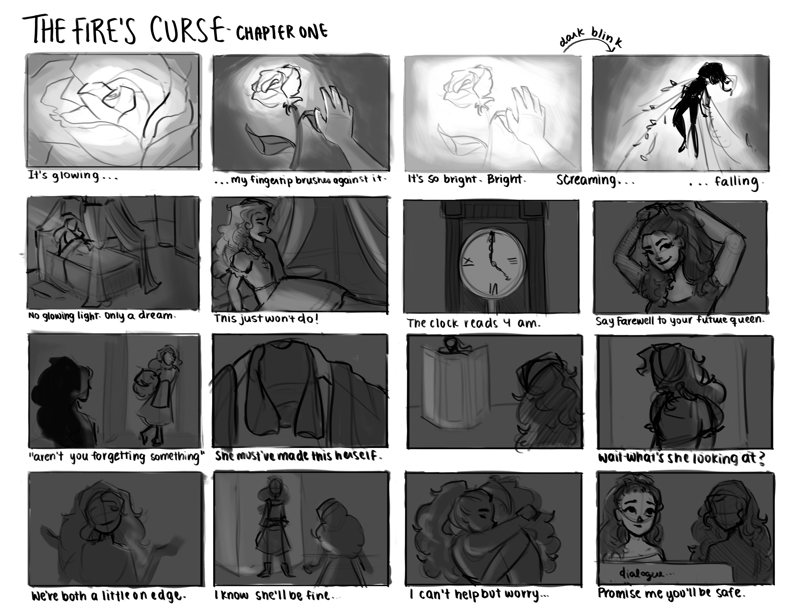
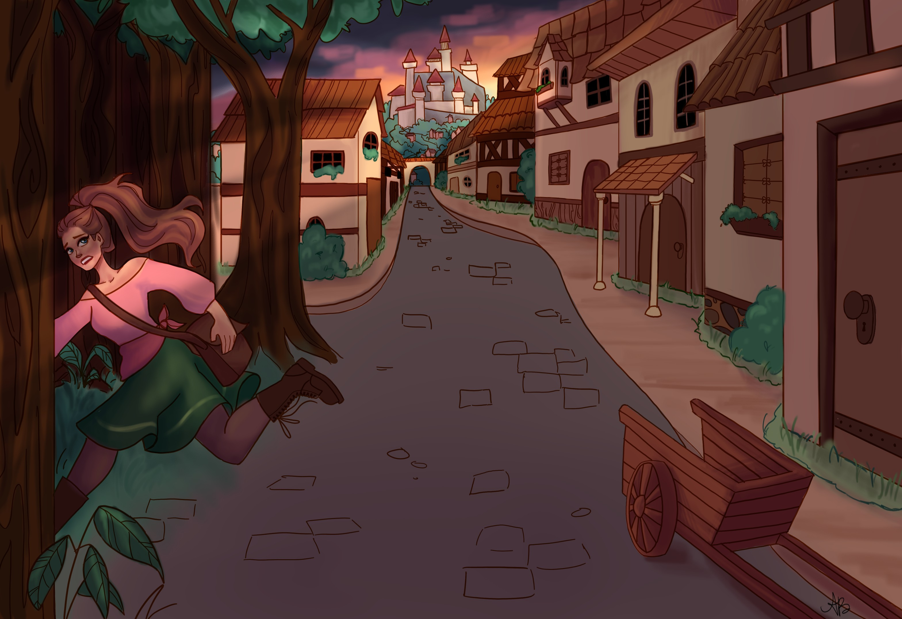

×

The Fire's Curse
A Visual Novel Prototype
The Fire's Curse tells the story of Eden, a princess with plant-related magic abilities. She can revitalize dying plants and can attack foes by summoning dangerous vines. Forced to conceal her powers by her overbearing family and her conservative kingdom, Eden flees the castle, longing for adventure. However, during her escapade, she learns that the world has been plagued by a terrible curse which is slowly killing all plant life. Along with a team of rebels she meets throughout her journey, Eden must find the source of the curse and save nature before it is too late.
Process

This project was made using the Ren'py game engine; Ren'py's native code language is heavily based on Python. This demo contains the first chapter of the story, which took two months to produce. First, the script was written and edited. From this script, a storyboard for the entire chapter was developed. Finally, each storyboard panel was translated into a full-color drawing. The art for this project was made in Clip Studio Paint. Ren’Py provided a basic framework for the game, but I reskinned it to better suit the aesthetic of the project. All the graphical user interface assets were also made in Clip Studio Paint. The last step was putting it all together: I translated the text script into Ren’py code, added transitions for the panels and found royalty-free music to accompany the visuals.
Intentions
The intent of this project was to create an immersive experience for the viewer; I wanted my audience to be transported into Eden's world throughout the playthrough. When conceiving the story, I chose to present it as a visual novel because I wanted the audience to have a more heightened experience than simply reading a novel. To achieve this, I paid careful attention to the cohesiveness of the images, sound effects and user interface. All three elements needed to work together to create a believable fantasy atmosphere. Since it was my first time making a video game, there are some improvements that could be made. Firstly, I would have liked to include more interactive elements such as a mini game where the main character must run out of the castle without being seen, instead of passively showing the images of her escape to the player. Secondly, I could have optimized the art better; each panel is a completely different drawing, which made the whole process extremely time consuming and caused me to stop after only one chapter. Overall, I hope this project conveys its desired effect despite its flaws, and I would love to revisit it someday.
